MIT TECHNOLOGY REVIEW
ux design
Five practical ways teams can make continuous learning part of everyday work.

🙌 4💡 7
Del artikler, perspektiver og ting vi bør få med oss.

 A.200
A.200 
⋮Five practical ways teams can make continuous learning part of everyday work.
Veldig god artikkel om hvordan produktteam kan jobbe mer systematisk med AI. Anbefales!
Five practical ways teams can make continuous learning part of everyday work.


Hei Oda! Vil du gjøre denne artikkelen tilgjengelig i Kvakkit så flere kollegaer kan se?
Ved å dele kan du bidra til lagpotten. Du får 3 poeng for bidraget.
Ingenting deles uten ditt samtykke